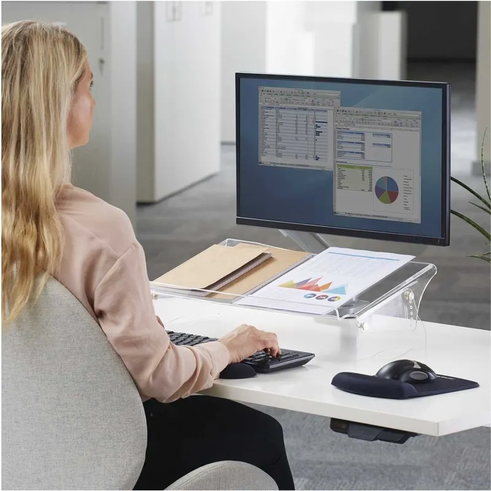

Diseño del Puesto
Principales recomendaciones ergonómicas para un entorno informático saludable. Un buen diseño del espacio de trabajo es vital para prevenir lesiones a largo plazo.

Silla ergonómica
- Altura regulable (codos entre 70º y 115º).
- Respaldo con apoyo lumbar ajustable.
- Base estable de cinco apoyos con ruedas.
- Apoyabrazos regulables en altura.

Pantalla
- Frente al usuario, evitando giros de cuello.
- Distancia recomendada de 60–80 cm.
- Borde superior a la altura de los ojos.
- Ajustar brillo para evitar fatiga visual.

Atril
- Colocado a la misma altura y distancia que la pantalla.
- Evita movimientos repetitivos de cuello.
- Recomendado si se trabaja con papel habitualmente.

Teclado
- Ubicado a la altura del codo.
- Espacio de 10 cm para apoyo de muñecas.
- Mantener muñecas rectas y relajadas.

Ratón
- Diseño ergonómico que llene la palma.
- Muñeca en posición neutra (sin doblar).
- Uso de alfombrilla para mejor precisión.

Reposapiés
- Necesario si los pies no llegan al suelo.
- Inclinación ajustable entre 0º y 15º.
- Superficie rugosa y antideslizante.

Mesa de Trabajo
- Superficie amplia (mínimo 180x80 cm).
- Altura libre para piernas sin obstáculos.
- Acabado mate para evitar reflejos.

Postura General
- Espalda totalmente apoyada en el respaldo.
- Pies firmes en el suelo o reposapiés.
- Ángulo de rodillas y cadera cercano a 90º.